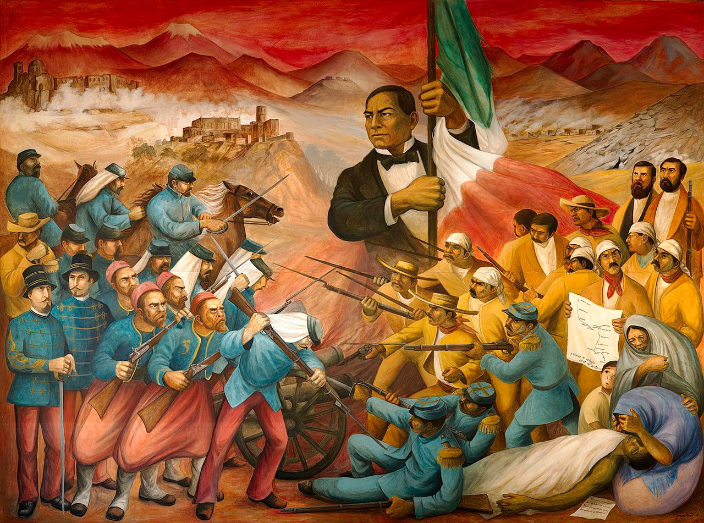

Debido a una crisis economica, el presidente Benito Juarez anuncio la suspension temporal del pago de la deuda externa a varios paises.
Inglaterra y España llegaron a un acuerdo, pero Francia aprovecho para intentar establecer un imperio en territorio mexicano.
El emperador Frances Napoleon III buscaba aumentar la influencia de Francia en America y encontro el apoyo de un grupo de conservadores mexicanos.
En 1862, las tropas francesas intentaron tomar la ciudad de Puebla, pero fueron derrotadas el 5 de mayo por el ejercito mexicano, dirigido por el general Ignacio Zaragoza.
Sin embargo, Francia envio un ejercito mas grande y logro ocupar la Ciudad de Mexico.
En 1864 llego al pais Maximiliano de Habsburgo, quien asumio como emperador de Mexico junto con su esposa Carlota, implantando reformas liberales, contando unicamente con el apoyo militar frances.
Mientras tanto, Benito Juarez mantuvo un gobierno republicano itinerante y organizo la resistencia.
El gobierno estadounidense brindo su apoyo diplomatico y politico a Juarez, exigiendo el retiro de las tropas francesas.
Finalmente, Francia retiro su ejercito en 1867 y Maximiliano fue capturado en Queretaro y fusilado, restaurandose la Republica con el regreso de Benito Juarez a la Ciudad de Mexico.
